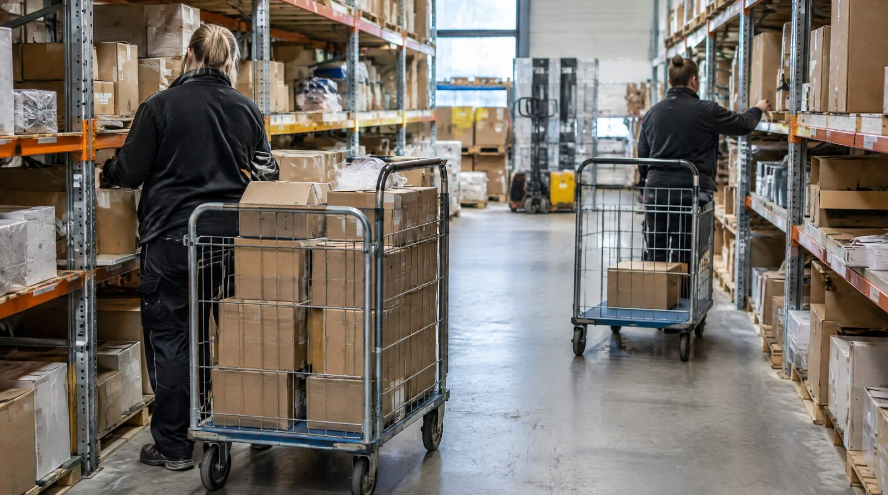

Hvis du ikke ved, hvor mange ordrer din medarbejder behandler per dag, ved du ikke om du er effektiv eller ineffektiv. Du bare betaler lønregningen og håber på det bedste.
Hvad er ordrer pr. medarbejder?
Ordrer pr. medarbejder (OPM) er et produktivitets-KPI der viser, hvor mange ordrer én medarbejder behandler per dag. Det dækker typisk over plukning og pakning kombineret.
To eksempler fra virkeligheden: Luksushund sender 20 procent flere ordrer med samme antal ansatte, og Uniq Perler to til tre gange omsætningen, også med samme antal ansatte.
Relaterede KPIer:
- Picks/time: plukkede linjer pr. arbejdstime. SmartPacks standardforventning er 110, og det er en sats du selv kan rette.
- Pakker/time: pakkede ordrer pr. arbejdstime. SmartPacks standardforventning er 45.
- Ordrer/dag/medarbejder: Samlet output per medarbejder per dag.
Beregning
Picks/time = Totale picks i periode ÷ Totale arbejdstimer
Ordrer/dag/medarbejder = Totale ordrer ÷ Antal pluk/pak-medarbejdere ÷ Arbejdsdage
Eksempel: 3 medarbejdere, 500 ordrer/dag, 7 timer/dag
500 ÷ 3 = 167 ordrer/dag/medarbejder
167 × 1,5 linjer = 250 picks/dag
250 ÷ 7 timer = 35,7 picks/time
Til sammenligning: SmartPacks standardforventning er 110 picks/time👉 Skalerer din webshop? Se hvordan SmartPack understøtter vækst
Konsekvenser i kroner
Forskel på 60 og 110 picks/time med 3 medarbejdere, 7 timer om dagen:
- 60 picks/time: 60 × 7 × 3 = 1.260 picks om dagen
- 110 picks/time: 110 × 7 × 3 = 2.310 picks om dagen
Det er 83 % mere ud af den samme bemanding. Skal du nå 2.310 picks om dagen med 60 picks/time, skal du op på fem til seks medarbejdere i stedet for tre. Ved 35.000 kr. om måneden pr. medarbejder er det omkring 87.000 kr. om måneden, altså cirka en million kroner om året.
Et forbehold: regnestykket forudsætter at 110 picks/time er den rigtige forventning til jeres varer. Er sortimentet tungt, eller er ordrerne fulde af enkeltlinjer, er satsen sat for højt, og så er forskellen mindre end den ser ud. Måltal på lageret gennemgår hvad der vælter en fast sats.
Hvad driver picks/time?
- Batch picking, fra 1 ordre ad gangen til 8-16 ordrer per tur. +40-60% picks/time.
- Layout/slotting, A-varer nær pakkestationen. +15-25% picks/time.
- WMS med dirigeret pluk, optimal rækkefølge beregnet automatisk. +10-20%.
- Scanning vs. papir, fjerner pluk-fejl og manuel registrering. +5-15%.
- Onboarding-kvalitet, standardiserede processer. Ny medarbejder til fuld produktion på 2 uger.
Typiske fejl
- Måler kun ordrer, ikke picks/time, ordrer varierer med sortiments-kompleksitet. Picks/time er det sammenlignelige tal.
- Sammenligner medarbejdere uden at kende systemets begrænsninger, lav produktivitet kan skyldes dårligt layout, ikke dårlige medarbejdere.
- Har ikke et baseline, kender du ikke dit nuværende tal, kan du ikke forbedre det.
Sådan gør du det rigtigt
- Mål picks/time ugentligt, lav et simpelt dashboard. Det behøver ikke et avanceret system at starte med.
- Sæt måltal per kvartal, start med baseline, forbedre med 5-10% per kvartal via de kendte løftestanger.
- Identificér topperformere og lær af dem, hvad gør den hurtigste plukker anderledes? Standardisér den metode.
SmartPack understøttelse
SmartPack måler og viser picks/time, ordrer/medarbejder/dag og pakker/time i realtid. Du ser ikke bare totalen, du ser pr. medarbejder, pr. skift og trendlinje. Systemet identificerer automatisk, hvornår et fald i produktivitet skyldes layout, proces eller systemproblem.
- Luksushund: 20 pct. flere ordrer, samme bemanding
- Uniq Perler: 2-3x omsætning med samme antal ansatte